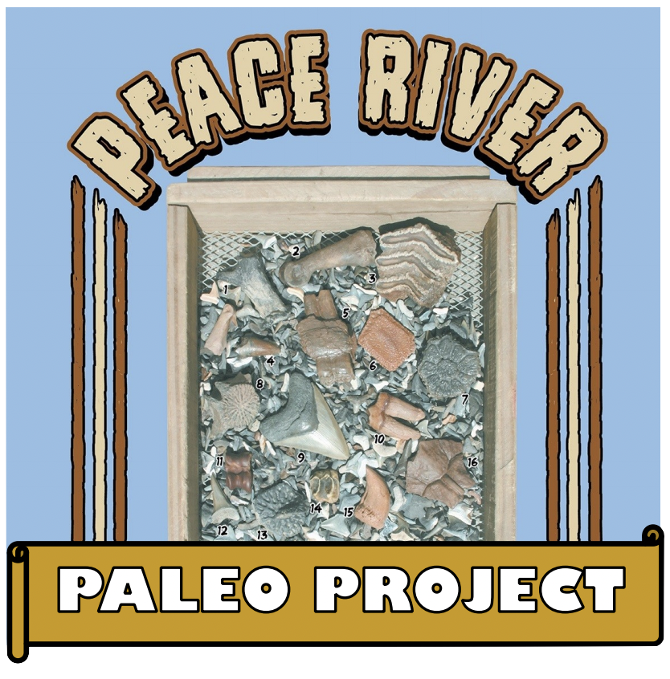

Announcements
TBFC Returns!Welcome back fossil hunters, it’s that time of year again! The kids are back to school (maybe), the dog days of summer will hopefully come to an end (maybe not until October), and it’s time to wake the Tampa Bay Fossil Club from its summer hibernation! As usual, your TBFC Officers and Directors have already been hard at work preparing for you another great season of interesting meetings, informative lectures, and field trip adventures, COVID allowing! Are you ready?
Dec. 5, 2020
Dr. Richard Hulbert, Florida Museum of Natural History
Introducing the Peace River Paleo Project (PRiPP): Research, Outreach, and Education
7PM VIRTUAL MEETING Live on YouTube

Vertebrate fossils collected from the Peace River and its tributaries
in Hardee and De Soto Counties were the frequent objects of study
by professional paleontologists between 1880 and 1928. But since
then very few scientific publications have used Peace River specimens.
This change was the result of discovery of Florida fossil vertebrate
localities that greatly exceeded those then known from the
Peace River in terms of quality and/or quantity of specimens.
When Florida Museum paleontologists began a systematic program
of collecting river fossils in the 1960s, they concentrated their
efforts in northern Florida. But thanks to many generous public
donations, Peace River specimens in Florida Museum collections
now exceed 2500, some belonging to species never recorded from
the region in the scientific literature. Over the next two years, UF
graduate student Mackenzie Ross and Florida Museum collections
manager Richard Hulbert will lead a project based on this sample.
In addition to traditional paleontological research, including
description of specimens and analyses of mammalian teeth to make
inferences about diet and climate, the PRiPP will provide K-12
science educators in the region with actual and virtual fossil
specimens along with data and technical support to develop their own
course curricula and lesson plans dealing with Peace River
paleontology. The project will also develop multi-media content aimed at
avocational and recreational fossil collectors, such as on-line
identification guides, as well as in-home visits to private collections once
these can be done safely.